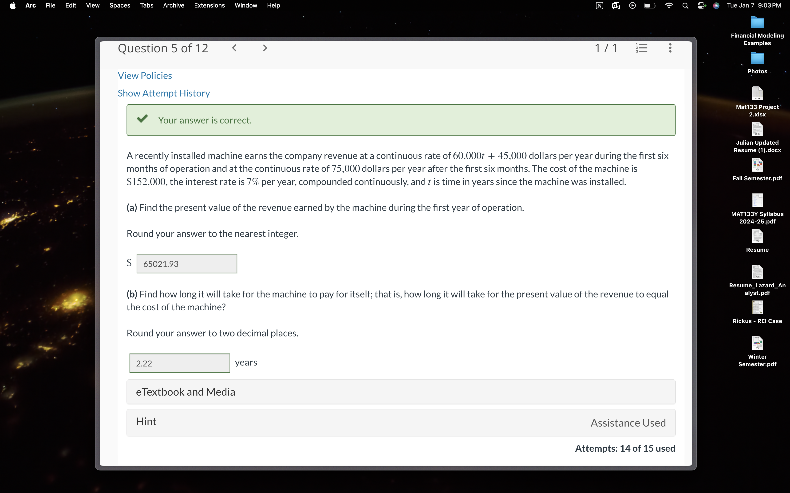
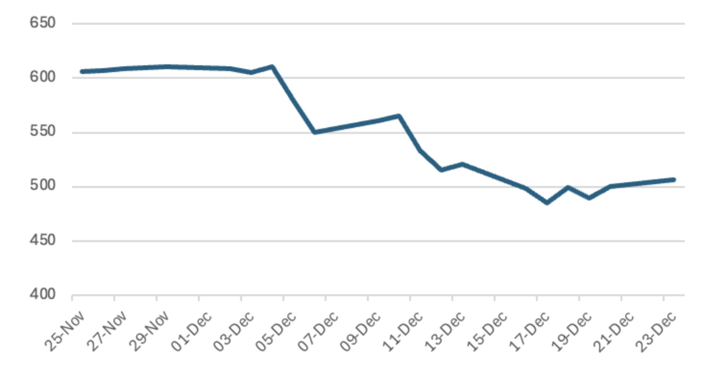
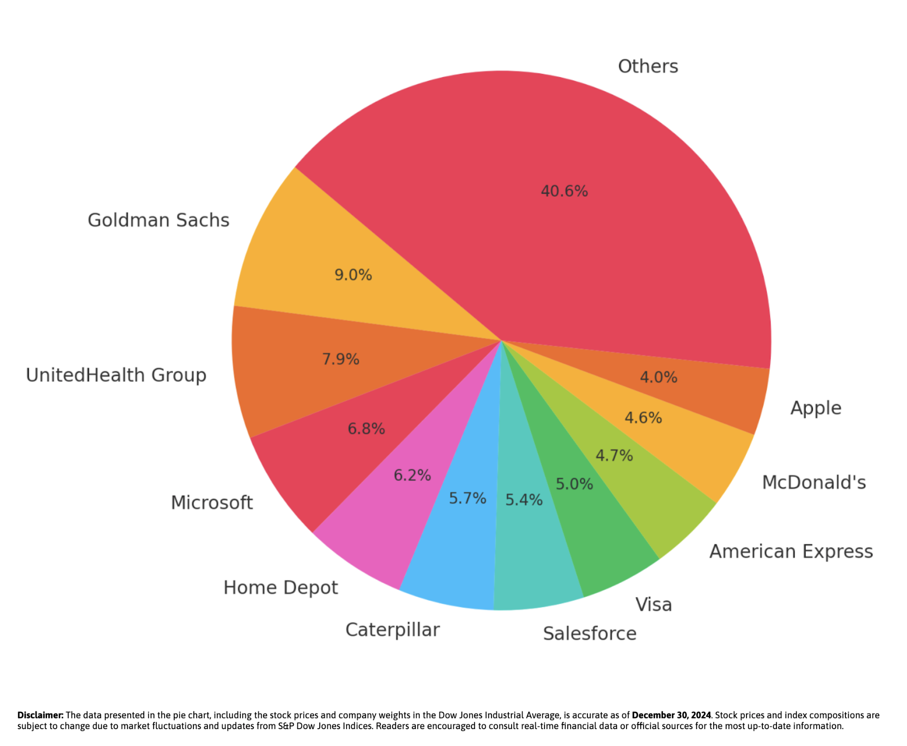

The tragic assassination of UnitedHealthcare’s CEO, Brian Thompson, on December 4, 2024, shocked the corporate world, wiping billions off UnitedHealth Group’s market value and underscoring the fragile link between leadership and investor confidence. Beyond the immediate and steep drop in UnitedHealth’s stock price, the incident also raised concerns about the company’s stability and its broader implications for the healthcare industry.
Stock and Market Analysis
Thompson’s death had an immediate and profound effect on UnitedHealth Group’s stock, as well as on market speculations about its future. Before the incident, the company’s shares traded at around $610. Within two days, the stock had dropped by more than 10%, and two weeks later, it had fallen to $481—a staggering 21% decline (Figure 1.1). This dramatic loss in value reflects uncertainties around leadership stability, operational continuity, and mounting regulatory pressures that could reshape the company’s business model and potentially cut into profit margins.
Source: Yahoo Finance
The ripple effects extended beyond UnitedHealth Group. As one of the largest components of the Dow Jones Industrial Average, accounting for approximately 8% of the index (Figure 1.2), UnitedHealth’s sharp decline contributed significantly to the Dow’s longest losing streak in half a century (Figure 1.3). This impact wasn’t confined to the index itself; related industries such as pharmacy benefit managers (PBMs), healthcare vendors, providers, and biotech firms also felt the strain. UnitedHealth’s struggles rattled investor confidence, leading to broader market volatility fueled by fears of regulatory changes, supply chain disruptions, and systemic vulnerabilities in the healthcare sector.
Source: MarketWatch
Source: Yahoo Finance
The Future for UnitedHealth Group
Despite the company’s recent struggles, UnitedHealth Group remains fairly well-positioned for future growth. However, the company faces significant hurdles. Regulatory risks, including potential antitrust actions or restrictions on vertical integration, could negatively impact its operations. Membership declines may also be driven by economic uncertainty or a shift in healthcare policies.
UnitedHealth’s CEO, Andrew Witty, will play a crucial role in navigating these challenges. Drawing from his experience as the former CEO of GlaxoSmithKline, he brings a steady hand and a global perspective on healthcare. Witty has frequently emphasized the importance of innovation, and under his leadership, UnitedHealth is expected to ramp up investments in advanced technologies such as telehealth, AI, and healthcare analytics. These innovations aim to improve efficiency, enhance patient outcomes, and solidify the company’s competitive edge.
Conclusion
The recent challenges facing UnitedHealth Group emphasize the delicate balance between leadership stability, market confidence, and organizational resilience. While Brian Thompson’s death disturbed the company’s leadership, UnitedHealth’s solid foundation, diverse businesses, and emphasis on innovation give it the resources it needs to navigate these pivotal times.
With initiatives in telemedicine, healthcare analytics, and value-based care, UnitedHealth has the potential to recover. By harnessing its strengths and remaining devoted to innovation, the company can maintain its leadership in the healthcare industry despite ongoing challenges.
Glossary
Dow Jones Industrial Average (DJIA): A stock market index tracking 30 large publicly traded U.S. companies, often used as a measure of the market’s overall performance.
Pharmacy Benefit Managers (PBMs): Companies that manage prescription drug benefits for insurers, negotiating drug prices and facilitating access to medications.
Operational Continuity: The ability of a company to sustain its essential functions and operations during significant disruptions.
Regulatory Pressure: Challenges or restrictions imposed by government policies, often targeting business practices to ensure fairness and compliance.
Telehealth: The use of digital technology to deliver healthcare services remotely, improving access and convenience for patients.
Vertical Integration: A strategy where a company controls multiple stages of its supply chain, from production to distribution, to increase efficiency.
Published by: Faris Rashid